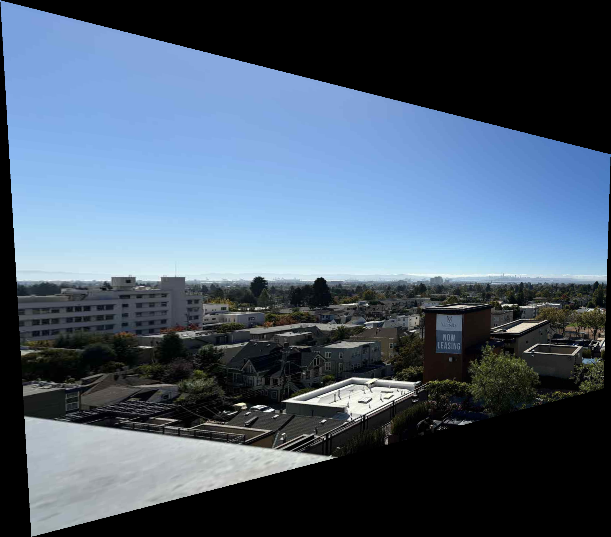
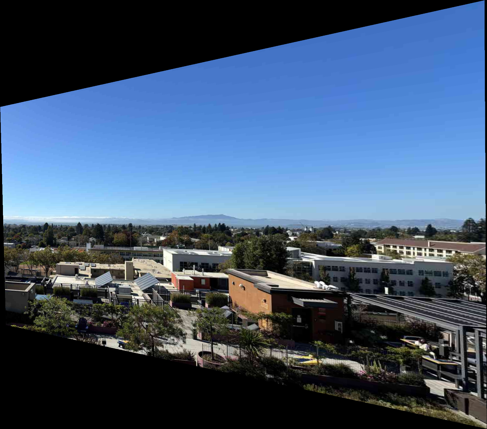
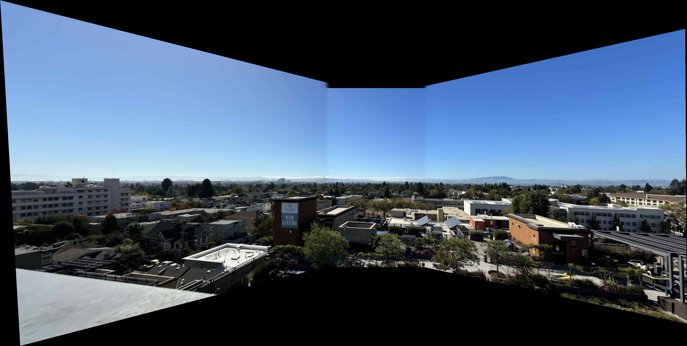

For photo shooting, I took four photos of the surrounding scenery from the balcony of our apartment, meeting the shooting requirements: the perspective is fixed at the lens, and the camera is rotated to ensure that the overlapping part of each photo is between 40% and 70%.


For calculating the transformation matrix, I first used MATLAB to select the corresponding points and then substituted them into the system of equations to obtain the transformation matrix. The calculated transformation matrix is as follows:
Using the calculated transformation matrix, one of the images is wrapped. First, calculate the transformed positions of the four corners of the original image to get the maximum range of the transformed image, which is set as the boundary. Points within the boundary are inverse-mapped to the original image, and interpolation is performed based on the values of the original image to obtain the wrapped image.
 Combine the wrapped image with another image. Set the parameters offset and overlap_ratio, and manually align them. Use a Laplacian pyramid to blend the two images together to get the mosaic image. One by one, at last we can get the result.
